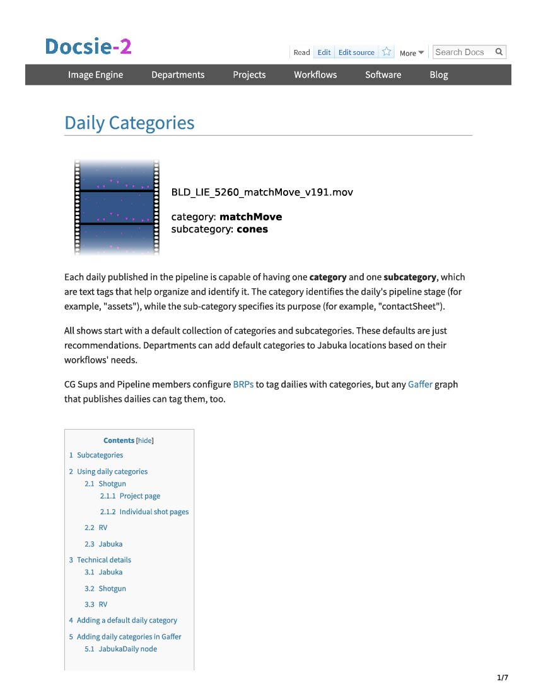

VFX Software Concept Article
Digital - 3,224 KB .pdf
Conceptual article covering the fundamentals of the computation engine of Gaffer, an open source node-based VFX tool. The client needed a ground-truth description of how the software's nodes compute data, which is essential for all users to comprehend in order for their node graphs to remain performant. The document had to perfectly follow the conceptual model without bogging readers down with implementation details.
© John Haddon
© Image Engine Design, Inc
Used with permission.
VFX Knowledge Base Reference Doc
Digital - 2,443 KB .pdf
Reference article that defines the key terminology for a VFX studio's custom asset management tool. Part of a new hire package designed to help onboard intermediate-to-expert VFX artists who are already familiar with asset management concepts, but need to be oriented on the precise meanings of common terms in the client's solution.
© Image Engine Design, Inc
Used with permission.
VFX Knowledge Base Concept Doc
Digital - 1,924 KB .pdf
Conceptual and procedural article describing a VFX pipeline feature with far-reaching effect throughout the client's studio. This feature determines how the business organizes its main internal deliverables (dailies), so the breakdown had to cover how to configure and use it in a way that was digestible to the whole user base.
© Image Engine Design, Inc
Used with permission.
VFX Knowledge Base Task Doc
Digital - 1,560 KB .pdf
Instructional article covering the first task that the client's staff performed every day. Since this procedure is of paramount importance for users to perform their daily duties, it was necessary to be as salient and short as possible, while also enticing them with optional actions that could improve their productivity.
© Image Engine Design, Inc
Used with permission.
Conference Room Startup Guide
Print - 7,772 KB .pdf
System startup guide for a studio's client review room. The guide had to fulfill multiple requirements on one page: speak to users of all technical abilities, distinguish between three overlapping hardware systems, and provide safety and security information per the IT department's needs.
© Image Engine Design, Inc
Used with permission.
CRM Software User Guide

Digital & print - 632 KB .pdf
Guide for internal CRM software for a public sector organisation. The client requested a guide that combined a user guide and reference, would be tailored for the their in-house use-case, and incorporate their users’ skill levels and training and adoption feedback.
© Vancouver Fraser Port Authority
Used with permission.
POS Software User Guide
Digital & print - 337 KB .pdf
Guide for operating open-source POS software and hardware for experienced salespeople. The client requested a guide that could be used as an introduction for new hires and a quick reference for current staff.
REST API Documentation

Digital & print - 264 KB .pdf
Documentation of API for database software with REST methods. Designed as a technical reference for expert users familar with APIs and API terminology.
Society Policy
Print - 179 KB .pdf
Ban policy for a registered BC society. Client requested a set of simple and fair rules in plain English that would protect staff, clients, and the public, which accorded with the BC Society Act and BC Human Rights Code, and which accounted for the organisation’s atypical management structure.
Password Manager Web Help
Digital - 987 KB .chm
Web help for password manager software. Designed as a task-based guide and manual for an intermediate user who wants to secure their passwords, but has no familiarity with password software.
Screen Capture User Guide

Digital - 1,820 KB .pdf
UI documentation for screen capture software. Designed as a task-based guide for first-time users.